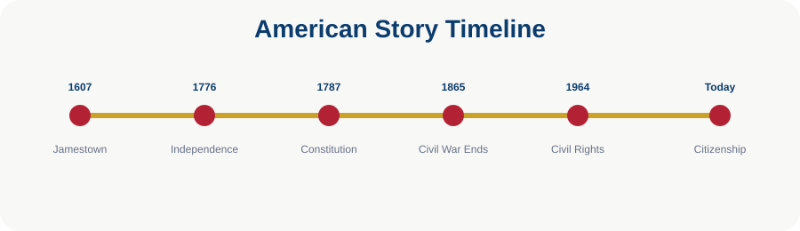

USCIS Questions Explained: Modern America and Symbols
The final civics questions cover modern history, geography, symbols, and holidays.
Learning Objectives
- Review Cold War and civil rights
- Review U.S. geography
- Review symbols and holidays

Modern History
During the Cold War, the main U.S. concern was communism. The Civil Rights Movement tried to end racial discrimination. Martin Luther King Jr. fought for civil rights.
Geography
The Pacific Ocean is on the West Coast and the Atlantic Ocean is on the East Coast. Canada is north and Mexico is south. Washington, D.C. is the capital.
Symbols
The flag has 13 stripes for the original colonies and 50 stars for the states. The national anthem is The Star-Spangled Banner. The Statue of Liberty is in New York Harbor.
Holidays
Independence Day is July 4. National holidays include New Year’s Day, Martin Luther King Jr. Day, Memorial Day, Independence Day, Labor Day, Veterans Day, Thanksgiving, and Christmas.

Chapter Summary
- Modern history includes the Cold War, Civil Rights Movement, and September 11.
- Geography questions are easier with a mental map.
- Symbols connect to history.
Key Terms
Constitution · Government · Rights · Citizenship · Federalism · Representation · Rule of Law
Review Questions
- What is the main idea of this chapter?
- How does this chapter connect to the Constitution?
- Why is this topic important for citizenship?
- Give one real-life example from this chapter.